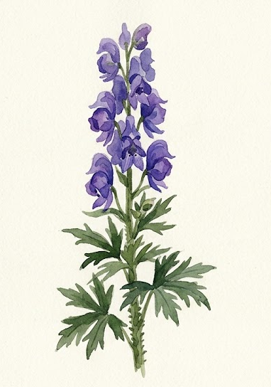
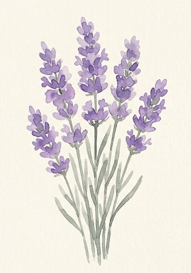
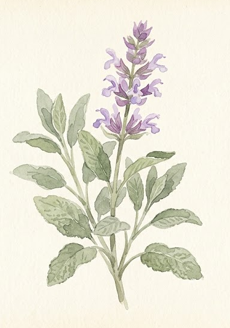
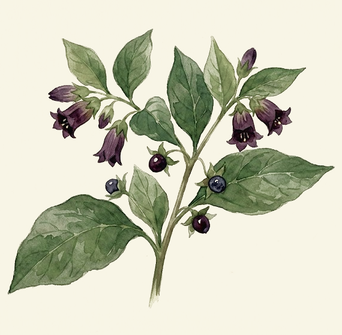
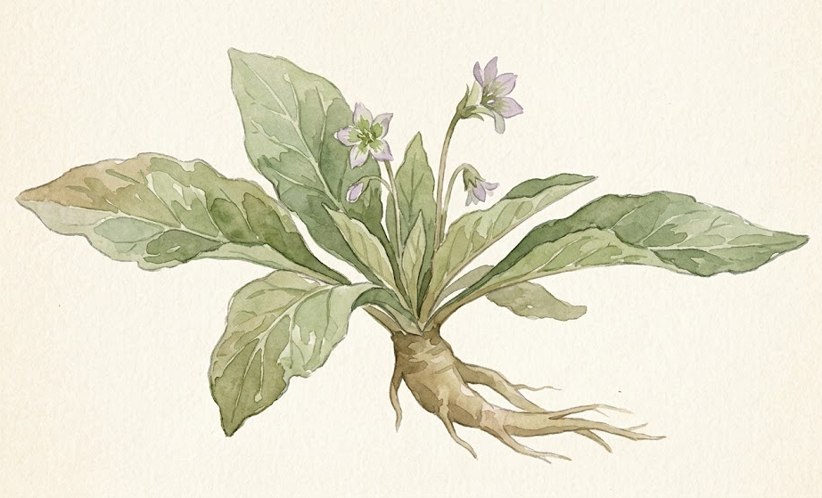
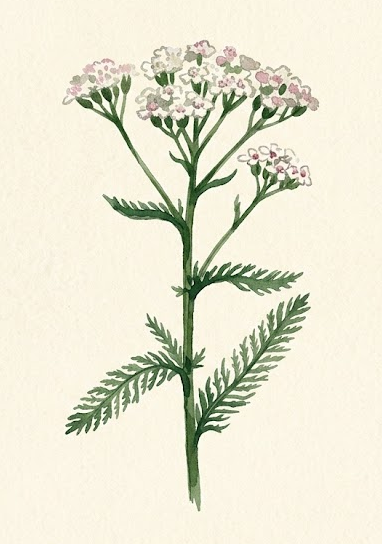

Bem vindo ao Codex do Apotecário um diário de anotações sobre plantas, ervas e mistérios da floresta feito pelo nosso Aventureiro Apotecário.
Capítulo I
Acônito

Acônito, dominadora de feras.
Nome Comum: Acônito
Origem do nome
Acônito, também conhecida como Wolfsbane, ou “mata-lobo”, remonta ao uso histórico da planta como veneno e era passada em iscas para
caçar lobos. A tradição popular associava a erva ao perigo e ao domínio da natureza.
Nome científico: Aconitum napellus
Outros nomes: Wolfsbane / Acónito / Capuz de Monge
Familia: Ranunculaceae — Buttercup family
Localização: Encontrado principalmente nas regiões montanhosas e zonas temperadas do Hemisfério Norte, abrangendo partes da Europa Ocidental e Central, Ásia e América do Norte
O acônito é uma planta venenosa de grande importância medicinal e histórica.
Foi utilizada em remédios antigos, em tinturas e em práticas de cuidado
doméstico, embora sempre com grande cautela. Pois a simples exposição da seiva e raízes pode causar intoxicação grave, arritmia cardiaca, entre outros sintomas.
Segundo as anotações do viajante, sua presença era sinal de terra antiga e de
terreno montanhoso. A planta cresce em locais sombrios, onde a umidade e o frio
se misturam com a sombra das pedras.
Usos
Utilizada em infusões para dor intensa.
Presente em remédios antigos e unguentos de bruxaria, embora seu princípio ativo, a aconitina, cause paralisia cardíaca em poucas horas.
Empregada como veneno em flechas e iscas, por sua toxicidade, e matar predadores, famosamente, lobos.
Atualmente nao é utilizada pela industria farmacêutica pelo alto grau de toxidade, embora no ocidente, na medicina Homeopática, ela passa por um processamento rigoroso e é utilizada para problemas de dor crônicas e problemas circulatórios
Folclore e Mitos
No folclore, era utilizada como repelente de Lobisomens ou era utilizada para poções anti-licantropia, um tipo de veneno especifico para lobisomens.
Observações do apotecário
Aprendi a respeitar o acônito muito antes de aprender a reconhecer suas flores.
É uma planta bonita, mas não há beleza que justifique descuido. Encontrei-a crescendo em encostas úmidas e frias,
quase sempre longe das áreas cultivadas. Mantenho-a separada das demais ervas e devidamente marcada;
algumas descobertas são melhores quando permanecem apenas no papel.
Capítulo II
Lavanda

Lavanda, simbolo de limpeza e aroma.
Nome Comum: Lavanda
Origem do nome
O nome Lavanda remonta ao latim "lavare", que significa "lavar". A planta era utilizada em banhos e para fins de limpeza.
Nome científico: Lavandula angustifolia
Outros nomes: Alfazema / Rosmaninho
Familia: Lamiaceae family
Localização: Originária da região do Mar Mediterrâneo, sul da Europa, norte da África, Arábia e Índia
A lavanda é conhecida por seu perfume delicado e por suas propriedades calmantes.
Durante séculos, seu óleo foi usado para dar seu cheiro característico a roupas,
dando origem ao seu nome. Também era usada no Egito antigo no processo de mumificação.
Foi muito utilizada guardada em sacos de tecido, banhos de ervas e misturas contra
o cansaço do corpo e da mente.
Usos
Usada em perfumaria e em velas de casa.
Empregada em infusões para repouso e serenidade, antigamente colocavam suas folhas secas em travesseiros para "curar a insônia".
Presente em remédios caseiros para dores leves.
Usada em produtos de higiene como sabonetes, loções.
Folclore e Mitos
Na inglaterra a era Tudor, moças bebiam chá de lavanda ates de dormir para ver o rosto do futuro marido em sonhos.
Durante a Peste Negra, acreditavam que plantas aromáticas, incluindo a lavanda, purificava o ar e afastava a peste.
A Lavanda era considerada uma das flores favoritas das fadas e acreditavam que ela era capaz de atrair-las para os jardins.
Observações do apotecário
Poucas coisas tornam um abrigo mais acolhedor depois de uma longa viagem do que o aroma de lavanda.
Costumo pendurar alguns ramos próximos ao meu leito e guardar outros entre as roupas.
Não é uma erva que exige muita atenção, e talvez seja justamente esse o seu encanto: mesmo nas jornadas
mais difíceis, sempre há espaço na bolsa para um pouco de tranquilidade.
Capítulo III
Sálvia Comum

Sálvia Comum, gosta de bastante sol e solos rochosos.
Nome Comum: Sálvia Comum
Origem do nome
O nome Salvia vem do latim, tradicionalmente relacionado a salvare ou "salvar", "curar" e a salvus, "são", "segirp", "inteiro". A associação provavelmente tem relação com a enorme reputação medicinal que as sálvias tinham na Antiguidade. Em outras palavras, o próprio nome carregava a ideia de: "a planta que salva"
Nome científico: Salvia officinalis L.
Outros nomes: Sage / Sálvia / Sálvia-comum / Garden Sage
Familia: Lamiaceae - a famosa família das mentas.
Localização: A Salvia officinalis é uma planta do sul da Europa e da região mediterrânea, especialemnte associadas aos ambientes secos e ensolarados do Mediterrâneo e dos Bálcãs.
A Sálvia é um subarbusto perene, geralmente alcançando algo proximo de 30-60cm, suas folhas
são verdes-acinzentadas, alongadas , enrugadas, sue aroma é forte, resinoso e levemente canforado.
É uma planta bastante resistente à seca, caracteística que faz sentido considerando sua origem mediterrânea.
As flores da Salvia possuem um mecanismo especialiado onde quando uma abelha entra na flor procurando néctar, seu corpo movimenta e faz com que o pólen
seja colocado nas costas da abelha, ajudando a transferir o polén para o lugar adequado.
Usos
Historicamente, folhas de sálvia foram mastigadas ou utilizadas em preparações para higienização da boca.
Por conta de seu aroma e propriedades quimicas, seu extrato e óleo foram usados em sabonetes, cosméticos e perfumes.
Atualmente é bastante utilizada como tempero, seu sabor é forte, levemente amargo, terroso e resinoso.
Folclore e Mitos
Acreditava-se que a sálvia florescia ou murchava de acordo com a saúde e a fortuna do dono da casa. Se a sálvia no jardim estivesse viçosa, os negócios e a saúde da família iam bem. Se murchasse de repente, era visto como um presságio de azar ou doença.
Na Idade Média, acreditava-se que colocar sálvia sob o travesseiro afastava pesadelos e protegia o sono contra demônios e feitiçaria.
Gregos e romanos associavam a planta à clareza mental. Dizia-se que consumir sálvia regularmente aumentava a sabedoria, melhorava a memória e trazia bom senso
Observações do apotecário
As folhas mais aromáticas foram colhidas no início do outono.
As plantas expostas ao sol da manhã parecem desenvolver um perfume mais intenso do que aquelas cultivadas à sombra.
Vale a pena manter alguns ramos sempre secos na bolsa de viagem; servem tanto para temperar uma refeição simples quanto para preparar uma infusão quente nas noites frias.
Capítulo IV
Beladona

Belladona, bela e mortal.
Nome Comum: Belladona
Origem do nome
O nome Belladona vem do italiano bella donna que significa "bela mulher" e remota ao período do Renascimento europeu,
as mulheres da época utilizavam a planta para dilatar suas pupilas o que era considerado um traço de beleza.
Nome científico:Atropa belladonna
Outros nomes: Erva-da-morte / Baga-da-bruxa / Deadly Nightshade
Familia: Solanaceae — a mesma de plantas conhecidas como o tomate, a batata, a berinjela e a pimenta
Localização: Nativa de regiões da Europa, além de partes da Ásia Ocidental e do Norte da África.
Costuma crescer em áreas sombreadas, bordas de florestas e solos ricos em calcário, preferindo ambientes frescos e protegidos.
A beladona possui uma longa história tanto como veneno quanto como planta medicinal. Preparações da planta foram utilizadas por
antigos e medievais curandeiros para diferentes enfermidades, embora sua toxicidade tornasse esses preparados extremamente perigosos.
Seu suco também foi utilizado como cosmético, principalmente para dilatar as pupilas e tornar os olhos aparentemente maiores.
Usos
Seu principal e mais conhecido uso era na industria estética ou de oftmologia para dilatação das pupilas, sintoma inclusive de seu envenenamento
Sua matéria prima chegou a ser usada em medicamentos para asma, alivio de espamos e até como sedativo, embora seu uso é considerado obsoleto pel a alta probabildiade de intoxidação.
Também ja foi utilizada em pomadas do tipo homeopáticas para alivio de processos inflamatórios locais, acne, dores musculares, etc.
No egito antigo foi utilizada como narcótico.
Folclore e Mitos
Seu proprio nome foi dado com uma história. Atropa deriva de Átropos, uma das três Moiras (as divindades que controlavam o destino humano). Enquanto suas irmãs teciam e mediam o fio da vida,
Átropos era a responsável por cortar o fio, representando a morte inevitável. A escolha do nome se deu devido à extrema toxicidade da planta, capaz de matar com poucas bagas ou folhas
Os assírios diziam que ela "afastava os pensamentos tristes" e seu uso teve larga difusão na Europa.
Na Idade Média e no início da Idade Moderna, a beladona era considerada uma das "ervas das bruxas" por excelência,
ao lado da mandrágora e do meixendro. Seu maior mito era que era utilizada para unguentos para voo.
Observações do apotecário
Certa vez, quando era um jovem viajante, cheguei a confundir os frutos da beladona com pequenas bagas silvestres.
Felizmente, uma senhora que passava reconheceu a planta antes que eu pudesse prová-las.
Desde então, presto mais atenção às ervas que crescem à sombra das estradas. As plantas mais perigosas nem sempre
são aquelas que parecem ameaçadoras; às vezes, são justamente as que nos convidam a estender a mão.
Capítulo V
Mandrágora

Mandrágora, amor e veneno.
Nome Comum: Mandrágora
Origem do nome
O nome Mandrágora vem do latim mandragora, derivado do grego mandragóras. Estudiosos acreditam que o termo grego
pode ter vindo de linguas orientais como o persa (nerdyn gjia, significando "planta dos humanos") ou do
assírio (nam-tar-ira, associado a uma "droga do deus Namtar" usada pra tratar esterilidade).
Nome científico: Aconitum napellus
Outros nomes: Mandrake / Erva-de-Circe / Maçã-do-diabo / Raíz-do-homem
Familia: Solanaceae — a mesma de plantas conhecidas como o tomate, a batata, a berinjela e a pimenta
Localização: é originária e encontrada principalmente na região do Mediterrâneo (sul da Europa, norte da África e Oriente Médio),
estendendo-se por partes do Sudoeste da Ásia e chegando esporadicamente até regiões como o Himalaia
A Mandrágora habita em encostas, clareiras, margens de campos, olivais e terrenos baldios em climas mediterrâneos, gosta de solos profundos e argilosos.
Possui flores roxas e seus frutos amarelos, carnosos, aromáticos e tóxicos eram chamados de "as maçãs do diabo" pelos árabes devido a supostos efeitos afrodisíacos.
As várias crendices e lendas ao redor desta planta provavelmente se originaram do fato de ela possuir uma raiz principal bifurcada bastante ramificada,
muitas vezes assemelhando-se à forma humana
Usos
Utilizada na antiguidade e na Idade Média como analgésico e anestésico pré-cirúrgico, sedativo.
Era amplamente requisitada para tratar a infertilidade de homens e mulheres (como citado em relatos bíblicos e tradições populares) e empregada em filtros de amor.
Contém alcaloides anticolinérgicos potentes (como atropina e escopolamina) que provocam alucinações intensas, delírios e intoxicações severas ou fatais.
Atualmente nao é utilizada pela industria farmacêutica pelo alto grau de toxidade, embora no ocidente, na medicina Homeopática, ela passa por um processamento rigoroso e é utilizada para problemas de dor crônicas e problemas circulatórios
Folclore e Mitos
Muito conhecida por sua aparições em diversos segmentos da cultura pop, acreditavam que suas raízes eram vivas e podiam soltar um choro/grito tão poderoso que poderia matar ou enlouquecer uma pessoa perto.
Inclusive chegavam a acreditar que a maneira mais segura
de colher a planta era amarrar um cachorro faminto na planta que então corria pra um prato de comida, arrancando a planta do solo ao correr, matando o cachorro mas poupando o coletor que cobria suas orelhas.
Os romanos geralmente misturavam a mandrágora com vinho e outras ervas para ajudar como sedativo ou sonífero.
Em práticas de feitiçaria, bruxaria e misticismo, foi utilizada como amuleto de proteção contra energias negativas, para atrair prosperidade ou sorte.
Observações do apotecário
A primeira mandrágora que encontrei crescia junto a um caminho pedregoso, quase escondida entre outras plantas. Sua raiz realmente possuía uma forma curiosamente humana,
embora eu não tenha ouvido grito algum ao retirá-la da terra. Talvez algumas histórias tenham apenas crescido junto com a planta.
Capítulo VI
Mil-Folhas

Mil-folhas, a humilde heroina.
Nome Comum: Mil-folhas
Origem do nome
O nome “mil-folhas” faz referência às suas folhas profundamente divididas, que dão à planta a aparência de possuir inúmeras pequenas folhas agrupadas em uma só. Seu nome científico, Achillea millefolium, também faz referência a essa característica: millefolium significa literalmente “mil folhas”.
Nome científico: Achillea millefolium
Outros nomes: Yarrow / Milefólio / Erva-dos-soldados / Achillea
Familia: Asteraceae family — família também das margaridas e girassóis
Localização: É nativa das regiões temperadas da Europa, Ásia e América do Norte, mas que se encontra amplamente naturalizada e cultivada em diversas partes do mundo, inclusive no Brasil.
A mil-folhas é uma planta perene de aparência delicada, mas é bastante resistente. Prefere locais com exposição plena ao sol e solos secos a moderadamente úmidos, leves e bem drenados, tolerando bem solos pobres e períodos de seca.
Suas folhas verdes são estreitas e profundamente divididas, formando pequenos segmentos que dão origem a seu nome. As flores surgem agrupadas no topo da planta e podem variar de coloração. Ela gosta de regiões abertas e é facilmente encontrada junto a caminhos e áreas de pastagem.
Usos
Usada para melhorar a saúde digestiva, auxiliando no tratamento da má digestão, desconfortos gastrointestinais e atua como estimulante biliar.
Era historicamente utilizada no tratamento de pequenos ferimentos externos e cortes, pela ação anti-inflamatória e analgésica, utilziada para estancar sangramentos.
Suas flores e folhas ja foram utilizadas em preparações aromáticas.
Sua beleza também a fez ser cultivada como planta ornamental
Folclore e Mitos
Seu nome Achillea millefolium vem de um mito de que o heroi grego Aquiles teria aprendido sua utilização com o centauro Quíron e a tivesse utilizado para ajudar seus soldados, estancando sangramentos e acelerando cicatrizações.
Na china, os caules secos e retos da planta são, tradicionalmente, os instrumentos oficiais mais valorizados para realizar a leitura do I Ching (O Livro das Mutações).
Ainda na china. Acredita-se que a planta cresce em locais onde a energia espiritual (Qi) é excepcionalmente pura e equilibrada, funcionando como uma antena entre o Céu e a Terra.
Nas tradições britânicas, em casamentos, ela era adicionada aos buquês e guirlandas para garantir que o amor dos noivos durasse pelo menos sete anos.
Observações do apotecário
Pisque o olho e você perderá a chance de reconhecer essa planta magnifica mas de aparência extremamente ordinária. Uma viajante que dividia o abrigo comigo reconheceu a planta e me contou como sua avó costumava guardá-la seca durante as viagens.
Anotei o nome naquela noite. Desde então, nunca mais passei por uma sem reconhecê-la e ela ja me salvou de alguns problemas e machucados. Caminhe de olhos atentos e sempre pegue algumas pra levar com você.